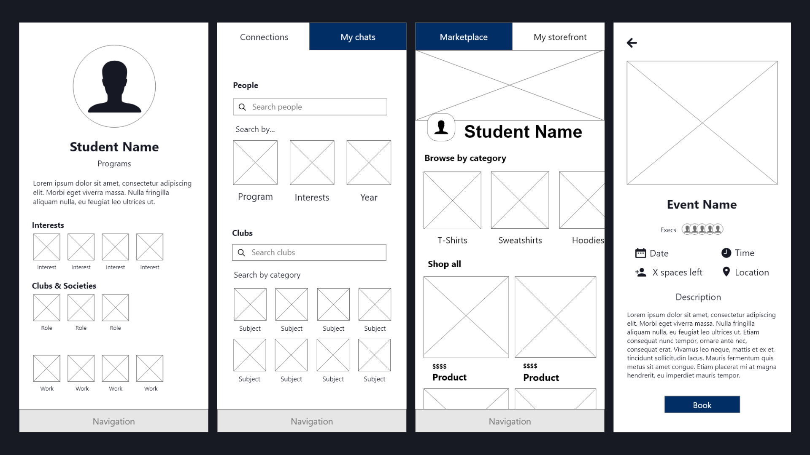
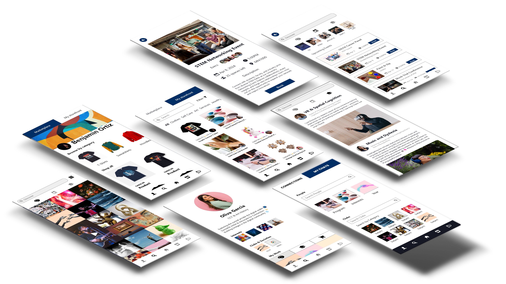

A UX/UI Case Study on Campus Community & Event Discovery
The Problem
Students at the University of Toronto often struggle to stay informed and engaged with campus events, research opportunities, and club activities. Existing systems, such as email newsletters and social media, are decentralized and often overlooked. Commuters especially report feeling disconnected from community life due to this lack of centralized access. Our goal with Campus Connect was to build a unified student platform that empowers students to showcase their work, connect with others, and discover events or services tailored to their interests.
Research & User Needs
We conducted usability testing on a medium-fidelity prototype, alongside anecdotal interviews and a student survey. Three participants tested key features, including the signup, login, and gallery sections. Key issues we uncovered included:
Unclear visual differentiation between sign-up and login flows.
Missing field instructions and uncertainty about profile sections (e.g., clubs, bios).
Difficulty locating how to upload or view others’ work, particularly in the "My Work" and gallery sections.
Navigation confusion due to overcrowded tabs and inconsistent layouts.
We also found demand for:
Editable profile features and personalized recommendations.
Easy access to other users’ profiles from their posts.
A responsive UI with larger touch targets and simplified layouts for mobile users.

Prototyping & Iteration
Based on user feedback, we iterated our Figma prototype with the following UX improvements:
Split login and sign-up into visually distinct buttons with clarified labels ("Log In" and "Create Account").
Added inline examples and tooltips for ambiguous fields, such as bio formatting and club input.
Consolidated "Gallery," "Academic/Research," and "Events" into a unified "Discover" page, reducing cognitive load.
Introduced a profile linking feature that lets users view other student creators from their work posts.
Implemented button resizing and visual consistency for improved mobile usability.
The medium-fidelity prototype focused on usability testing core flows, and incorporated accessibility through high-contrast text and clear iconography.

Outcome & Key Features
The final prototype offers a centralized and inclusive space for creative, academic, and entrepreneurial expression. Major features include:
Customizable student profiles with sections for bios, clubs, majors, interests, and gallery uploads.
"Discover" feed with posts across categories: marketplace, research, artwork, and events.
Like and comment functionality for peer interaction, plus ability to follow users.
Event calendar with RSVP tracking and personalized suggestions.
Mobile-first layout with clean modular navigation and consolidated tabs.
Campus Connect fosters engagement and supports students in building both academic and social presence on campus.
Future Considerations
Enable UTORid authentication and verification for account security.
Add dark/light mode toggle and font resizing options for accessibility.
Integrate professor-facing features to promote Research Opportunity Programs (ROPs) and TAship listings.
Deploy full-stack version with Firebase backend and track usage analytics during pilot testing.